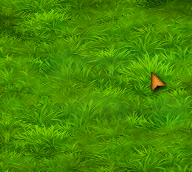

Welcome to the Settlers 4 HD Patch page!
This project aims to upscale every texture in Settlers 4 to HD using AI technology
Only the Settlers 4 History Edition is supported
| Table of Contents: |
|---|
| Screenshots |
| New Features |
| Download & Requirements |
| Credits |
| Other links: |
|---|
| Changelog |
Screenshots:
Before:
After:


New Features:
The HD Patch comes with a few (optional) quality of life features, that will help newcomers and improve readability
*(local only)

Download & Requirements
Current versions:
[Plugin] 0.15.1
[Assets] 0.10.0-Beta
Check out the changelogs here
You do not need to download this if you have Settlers United, check your S4 settings to start the download!
The following minimum PC specs are needed:
- OS: Windows 64bit
- Free Hard Drive Space: 10 GB
- GPU: DirectX 11 support with 2GB dedicated VRAM or higher*
- RAM: 8GB or higher
- Settlers 4 History Edition
* If your card supports DirectX 11 but doesn't have 2GB dedicated VRAM (Like a Intel HD/Xe) then you can still download the HD Patch but you have to use the Lite mode, which can be toggled in the main menu settings
Contact & Support
Did you experience any problems? Write us an email at
support@settlers4-hd.com
If you experienced a crash, try to include the settlers 4 hd patch log file and a crashdump, if available, in the game folder under /plugins/HDPatch
Credits
The Settlers 4 HD Patch would not be possible without these people:
- WizzardMaker
Lead Developer of this patch - Cydra
DirectX 11 Graphics Engineer of this patch - kdsystem1337
Tester, motivational support, made SU HD Patch installer - nyfrk
His Mod API and help laid the foundation this patch rests on - The Settler 4 Community Patch
Team
They helped with beta testing and motivating & thanks to Litze for starting the spark for this project - Settlers United [SU]
The new home for a bug free Settlers 3 & Settlers 4 - Thanks to all beta tester that helped me remove all bugs
Want to say thank you? Sponsor the lead developer WizzardMaker: